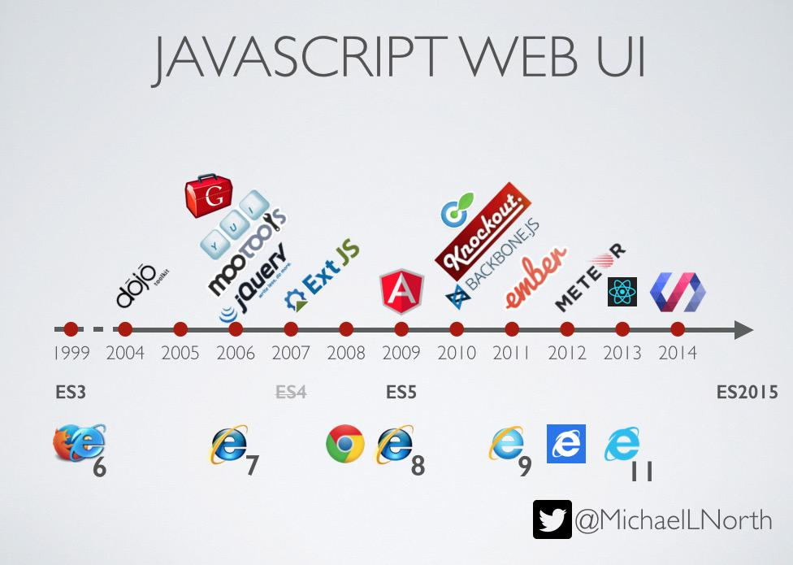
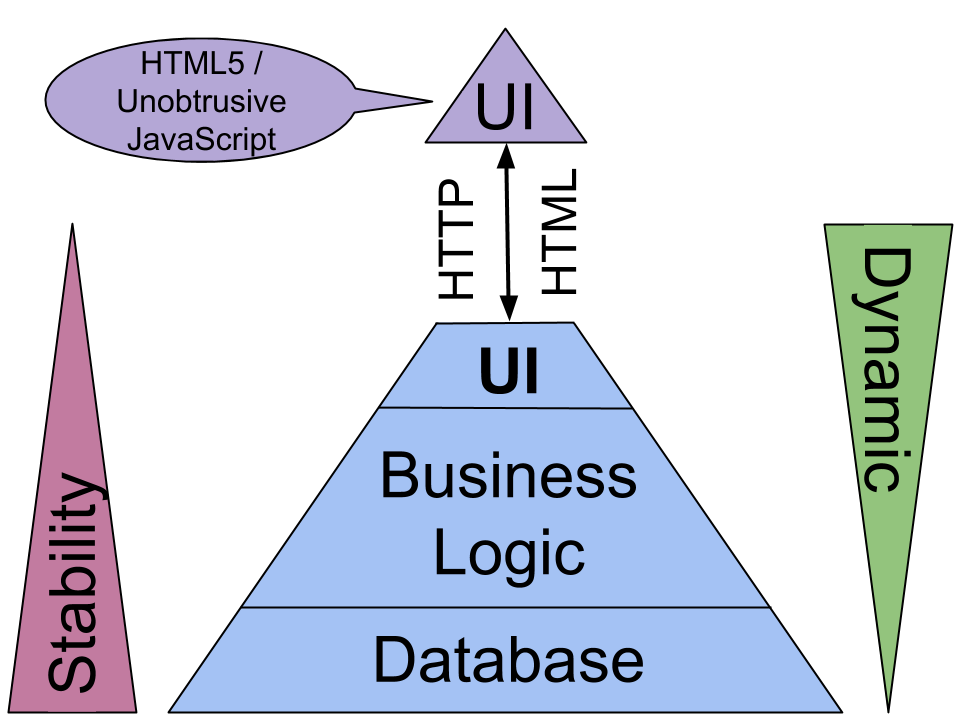
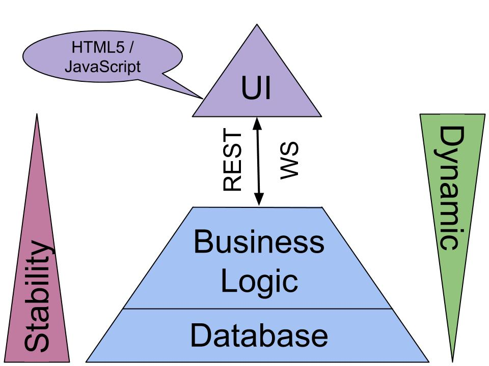
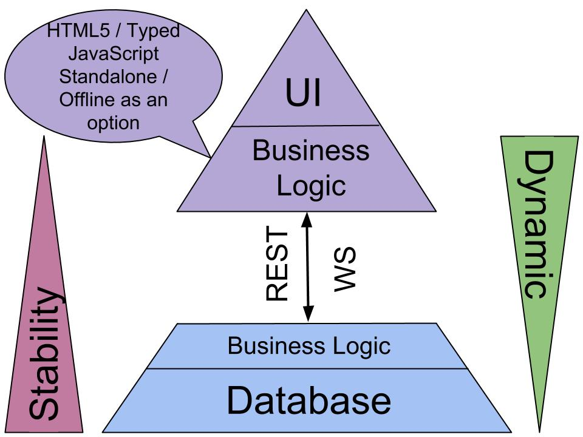
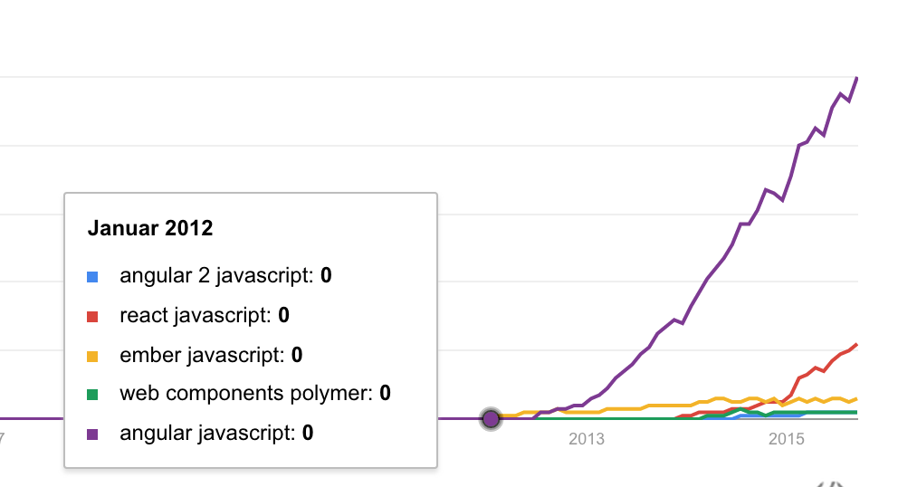
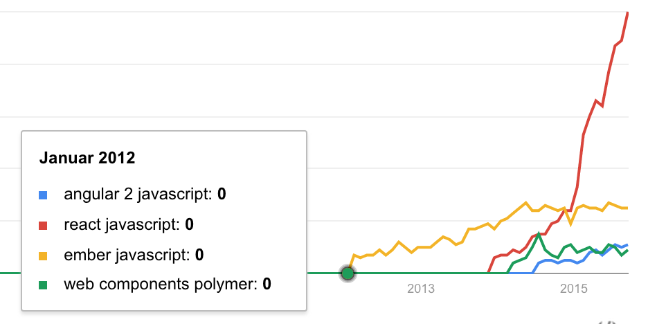

JavaScript Single Page Application Web Frameworks
Oliver Zeigermann / @DJCordhose
Online-Version: http://bit.ly/1YG2e63
Code auf Github: https://github.com/DJCordhose/javascript-web-frameworks/tree/gh-pages
Oliver Zeigermann


- Programmierer, Architekt, Berater und Coach
- Hamburg, Germany
- http://zeigermann.eu
- Arbeitet für embarc Software Consulting GmbH
- @DJCordhose
- Buch: JavaScript für Java-Entwickler
Überblick
Copyright 2015, Mike North (@michaellnorth), https://twitter.com/ModernWebUI/status/575532649948790784/photo/1
Klassiche Webanwendung
-

Copyright 2015, Oliver Zeigermann
Klassische Web-Anwendung als Referenz: hapi
- Server Side JavaScript framework
- Entwickelt bei Walmart
- läuft auf node.js
- Request/Response basiert
- Server side rendering mit Template-Engine deiner Wahl
Hello World Hapi / Handlebars Template
<form>
<input name="greeting" value="{{greeting}}">
<p>{{greeting}}, World</p>
<a href="/?greeting=">Clear</a>
<input type="submit" value="Send">
</form>var server = new Hapi.Server();
server.route({
method: 'GET',
path: '/',
handler: function (request, reply) {
reply.view('index', { greeting: request.query.greeting || 'Hello' });
}
});Single Page Applications (SPAs) verschieben eure Anwendung in den Browser
- Nutzer erwartet Bedienbarkeit wie im Desktop
- Langlebigkeit der Anwendung steigt
- mehr Logik im Browser
SPA Lean
-

Copyright 2015, Oliver Zeigermann
SPA Fat
-

Copyright 2015, Oliver Zeigermann
Und wieso dann ein JavaScript Web Framework?
Einheitliche Entwicklung wird wichtiger
Entweder nimmt man ein Standard-Framework
... oder man schreibt sein eigenes (manchmal ohne es zu merken)
Standard-Framework bietet
- einen erprobten Rahmen
- Community, Dokumentation
- neue Mitarbeiter finden sich zurecht
Unsere Kandidaten
- Magie: Angular 1.x... "Der Comunitylover"
- Mehr Magie?: Angular 2... "Zukunft?"
- Reale Web Components: Polymer... "Googles kleiner Schatz"
- Einfachheit: React... "Facebook reagiert!"
Trends September 2015
-

Trends September 2015 ohne Angular 1
-

Magie: Angular
- Aktueller Hype von Google
- View Model als Basis
- 3 Ds
- Data Binding (2-Wege)
- Dependency Injection
- Directives (=== Komponenten)
Hello World AngularJS 1.4
Code-Stil basiert auf (halb-) offizieller Empfehlung
function HelloController() {
var vm = this; // define view model
vm.greeting = 'Hello';
vm.clear = function () {
vm.greeting = '';
document.getElementById('in').focus();
};
}<body np-app ng-controller="HelloController as helloController">
<input ng-model="helloController.greeting" id="in">
<p>{{helloController.greeting}}, World!</p>
<input type="button" value="Clear"
ng-click="helloController.clear()">
</body>Der Communitylover
- Massig Developer, Foren, Themes, usw
- einfache Lernkurve
- Entwicklungstil unter JavaScript-Entwicklern umstritten
- Abkömmling Ionic (Hybrid-App-Framework)
Mehr Magie: Angular 2
- Nachfolger von Angular 1
- Ankündigung (Herbst 2014) hat zu Verunsicherung geführt
- Konzepte deutlich anders als Angular 1
- Kein Migrationspfad absehbar
- Entwickelt in Microsofts TypeScript (ES5, ES6 und Dart auch unterstützt)
- Basiert auf Komponenten
Hello World AngularJS 2.x
@Component({
selector: 'hello-app'
})
@View({
template:
`<input [value]="greeting" #in (keyup)="updateModel(in.value)">
<p>{{greeting}}, World</p>
<button (click)="reset(in)">Clear</button>`
})class HelloCmp {
greeting: string;
constructor() {
this.greeting = 'Hello';
}
reset(input) {
this.greeting = '';
input.focus();
}
updateModel(value) {
this.greeting = value;
}
}Von Angular 1 zu Angular 2
- Angular 2 Beta-Release bald
- 93% der Zugriffe auf Angular 1 Site (Stand Oktober 2015)
- sanfter Migrationspfad inzwischen denkbar
-
Angular 2 hat simuliertes 2-Wege-Data-Binding
<input [(ng-model)]="greeting" #in> - Datenfluss in 1 beliebigt, in 2 nur vom Parent zum Child
- Angular 1.5 wird Angular Router enthalten
- funktioniert mit Angular 1 und 2
- flexibel genug für alle Einsatzgebiete (inkl. nested Routes)
Reale Web Components: Polymer
- Von Google
- Basiert auf dem Standard Web Components
- Macht die API einfacher
- Bietet eine ganze Reihe von Standard-Komponenten
- Google hält es für produktiv einsetzbar (unterstreicht dies mit dem 1.0 Release)
Exkurs Web Components
- Eine Erweiterung der DOM-API als Standard
- Custom Elements: man kann eigene Tags definieren
- HTML Templates: einfache Templates innerhalb einer HTML-Seite
- Shadow DOM: Lokale Kapselung von DOM, JavaScript und CSS
- HTML Imports: Inkludieren von HTML/Web Components
Web Components: Unterstützung
- Wird im Moment nur von Chrome komplett unterstützt
- Firefox unterstützt HTML Imports nicht
- Microsoft hat mit der Umsetzung begonnen
- Polyfills für Unterstützung in allen Browsern verfügbar
- Kendo UI Widgets auch als Web Components möglich
- Vaadin bietet Grid und verspricht mehr
Hello World Polymer
<link rel="import" href="greeter-element.html">
<greeter-element greeting="Hello"></greeter-element>
// greeter-element.html
Polymer({
is: "greeter-element",
reset: function() {
this.greeting = "";
this.$.in.focus();
}
});
<dom-module id="greeter-element">
<template>
<input id="in" value="{{greeting::keyup}}">
{{greeting}}, World!
<input type="button" value="Clear" on-click="reset">
</template>
</dom-module>Das Nunchaku der Frameworks
- Cool, but useless?
- läuft nur in Chrome optimal
- Standardkomponenten -> Styling sehr Googlelastig
- Wer benutzt es?
- Alternative: Web Components mit anderem Framework nutzen (Angular 2 oder React)
Einfachheit: React
- Der kommende Hype von Facebook
- Framework für Facebook und viele andere
- Basiert auf Komponenten, die Template und Logik enthalten
- Templates sind einfach JavaScript
- Templates können HTML artige JSX-Syntax enthalten
- Ein-Weg-Data-Binding: Zustandsänderungen stellen Komponente neu dar
- Kann im Browser und auf dem Server rendern
Hello World React
class HelloMessage extends React.Component {
render() {
return (
<input value={this.state.greeting} ref="in"
onChange={this.updateModel.bind(this)} />
{this.state.greeting}, World
<button onClick={this.reset.bind(this)}>Clear</button>
);
} constructor(props) {
this.state = {greeting: this.props.greeting};
}
updateModel(event) {
this.setState({greeting: event.target.value});
}
reset() {
this.setState({greeting: ""});
this.refs.in.focus();
}
}Aufruf
// index.html
<body>
</body>
// main.js
import HelloMessage from './HelloMessage';
var mountNode = document.getElementById('mount');
ReactDOM.render(<HelloMessage greeting="Hello"/>, mountNode);
Hype, Hyper, React
- Macht genau, was es soll!
- Schnell!
- Mehr "Lib" als Framework
- wird für komplette Anwendung typischerweise mit React Router und einem Flux-Framework gekoppelt
- viel Inspiration aus der funktionalen Ecke (Immutable, pure functions, stateless)
Fazit
- Hypes kommen und gehen schnell im JavaScript-Land
- Technisch sind alle Frameworks brauchbar
- Mit allen sind ähnliche Arbeitsergebnisse erreichbar
- Welches Framework für dich das richtige ist, hängt von hauptsächlich von strategischen Überlegungen ab
- Langlebigkeit? Wartbarkeit?
- Einarbeitungsaufwand? Welcher Code-Stil passt zu dir?
- Diese Fragen kann man nur in Zusammenhang mit individuellen Anforderungen beantworten
Bewertung
| User Experience | Developer Experience | Standards | Investitionssicherheit | |
|---|---|---|---|---|
| Angular 1 | + (langsam bei vielen Komponenten) |
o (viel Magie, Komponenten unnötig komplex) |
- (Angular-way eher Java-Stil) |
o (muss migriert werden) ++ (hohe Verbreitung) |
| Polymer | + (nur in Chrome optimal) |
o (bisher nur geringe Toolunterstützung) |
+ (basiert auf Standard und 1.0) |
o (1.0, aber wer setzt das ein?) |
| React | ++ | ++ (Turnaroundzeiten)
o (vieles neu) - (keine Trennung von Markup und UI-Logik) |
+ | + (Einsatz bei Facebook, Rückwärtskompatibilität, Stabilität, Reife) |
| Angular 2 | ++ | o (vieles neu) ++ (sehr flexibel) |
+ | - (kein Release) |
Disclaimer: basierend auf unseren Erfahrungen
Vielen Dank!
Fragen / Diskussion
Oliver Zeigermann / @DJCordhose
Bonus Level
Aurelia: Next Generation?
- http://aurelia.io
- Rob Eisenberg (Hauptentwickler) ist dem Angular 2 Team erst beigetreten und dann hat es wieder verlassen
- ES7, Babel, npm, jspm.io, gulp
- Aurelia vs Angular 2
- Ähnliche Ideen wie Angular 2, aber mit dem Versprechen: Weniger Code, mehr Konventionen, einfacher
Elm: Hype 2016?
- http://elm-lang.org/
- Eine funkionale, responsive Sprache mit festgelegter Architektur
- Ähnliche Ideen wie Redux/Flux für React, aber Architektur in die Sprache eingebaut
- Browser als einzige Zielplattform
- Wird durch Compiler nach JavaScript übersetzt
- Nutzt ähnliche Ideen wie React für das Rendering
- Statische Typisierung und Null-Types